T L D R :
Depth and normal supervision improves 3DGS novel-view synthesis and mesh reconstruction.
 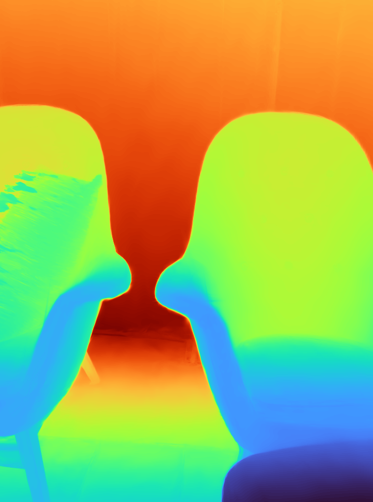
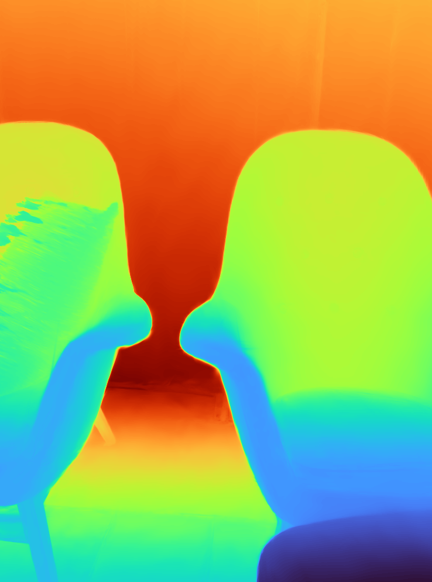
 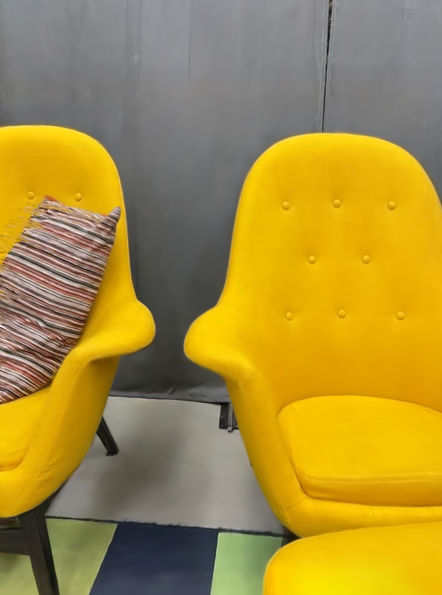
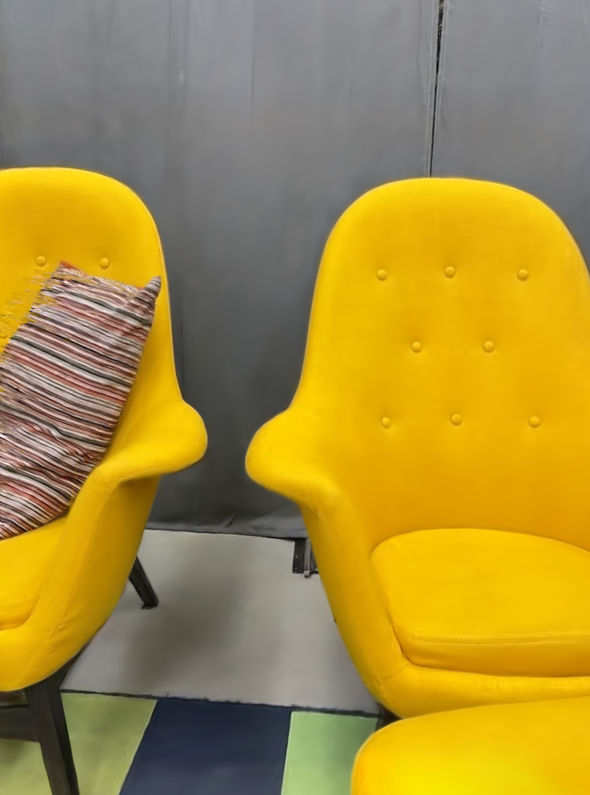
3D Gaussian splatting, a novel differentiable rendering technique, has achieved state-of-the-art novel view synthesis results with high rendering speeds and relatively low training times. However, its performance on scenes commonly seen in indoor datasets is poor due to the lack of geometric constraints during optimization. We extend 3D Gaussian splatting with depth and normal cues to tackle challenging indoor datasets and showcase techniques for efficient mesh extraction, an important downstream application. Specifically, we regularize the optimization procedure with depth information, enforce local smoothness of nearby Gaussians, and use the geometry of the 3D Gaussians supervised by normal cues to achieve better alignment with the true scene geometry. We improve depth estimation and novel view synthesis results over baselines and show how this simple yet effective regularization technique can be used to directly extract meshes from the Gaussian representation yielding more physically accurate reconstructions on indoor scenes.
Overview: Depth and normal guided 3DGS results in more photorealistic novel-view synthesis as well as better geometric reconstructions.
Casually captured iPhone 13 Pro data processed with DN-Splatter. We visualize depth, normal, and rgb renders as well as exported Poisson meshes and compare against the Splatfacto baseline method.
Depth estimation and novel-view synthesis:
Normal estimation:
 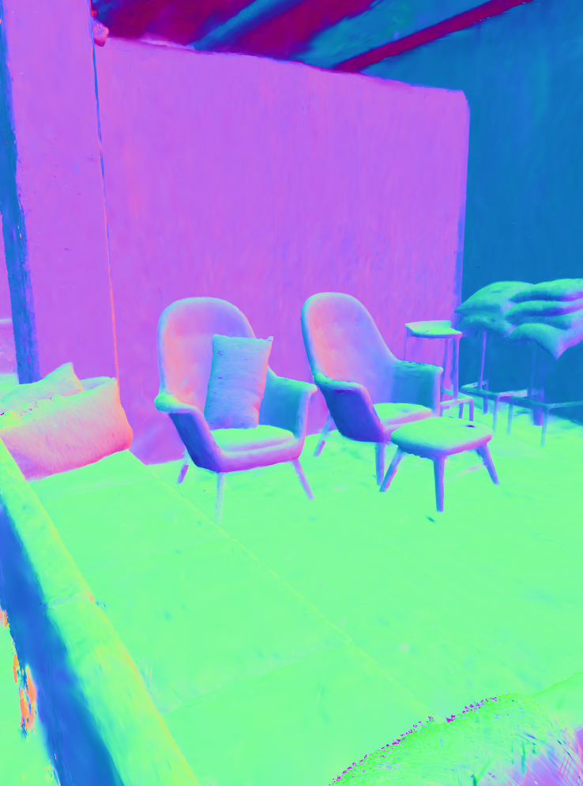
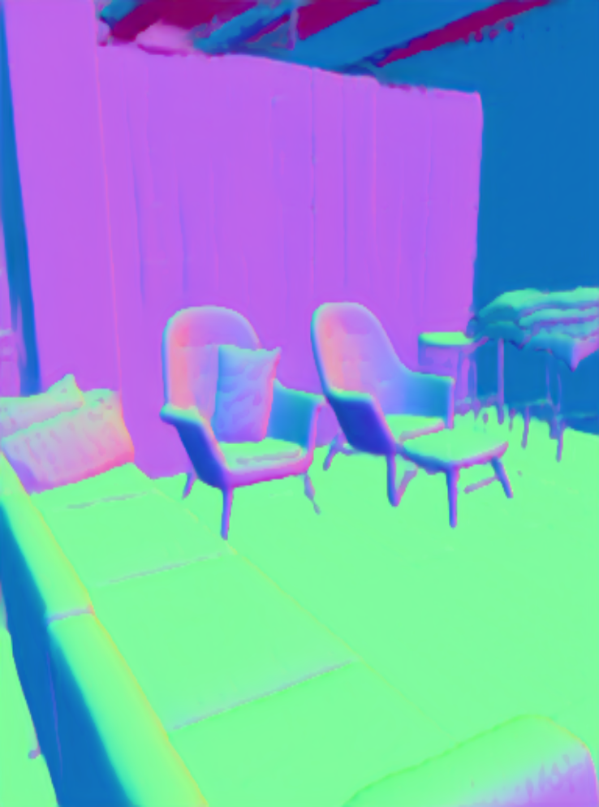
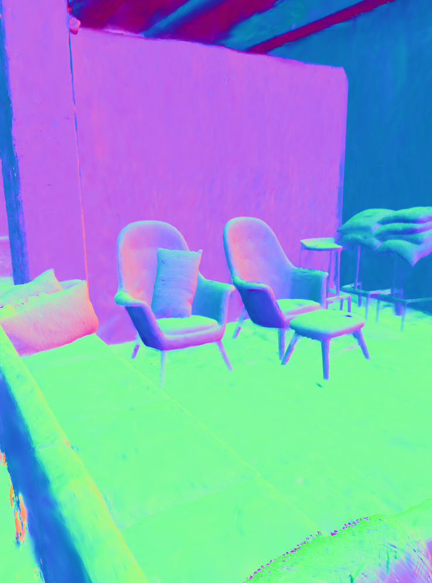
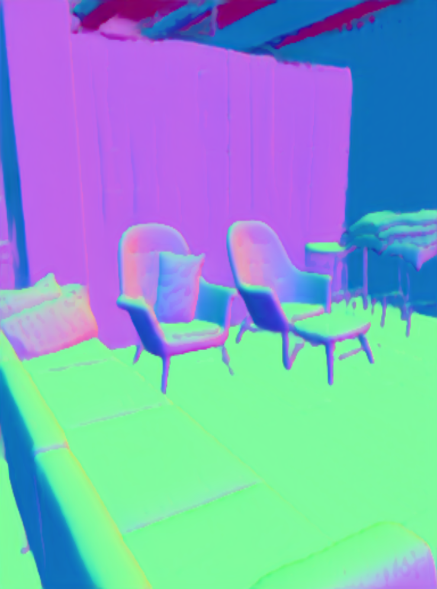
Mesh reconstruction on real-world indoor scenes: MuSHRoom dataset reconstructions with iPhone data.
 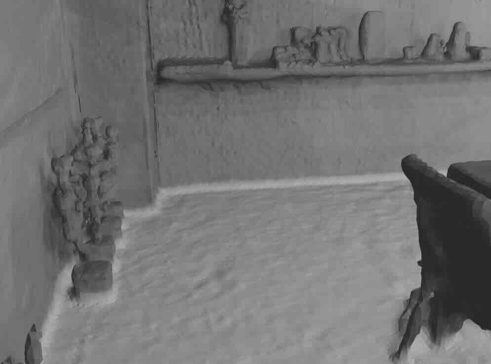
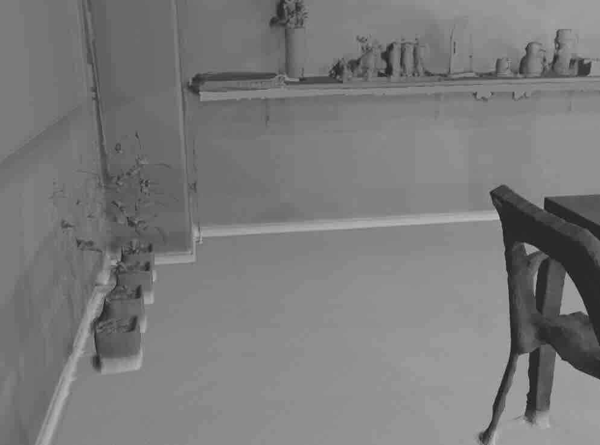
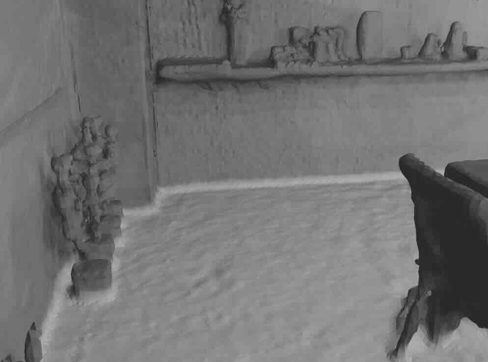
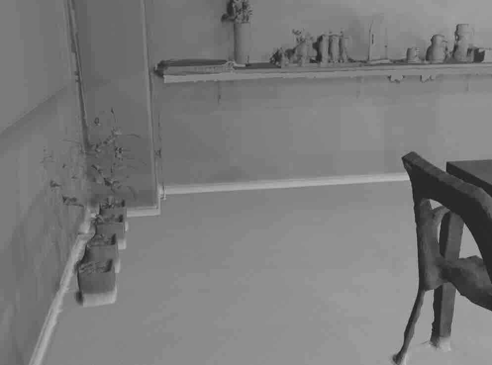
Reconstruction on the Honka scene from MuSHRoom dataset
Splatfacto
DN-Splatter
Reconstruction on the Sauna scene from MuSHRoom dataset
Splatfacto
DN-Splatter
Comparison of normal supervision with the gradient of rendered depths and monocular normal supervision.
Check out some interesting projects related to 3DGS:
Depth supervision:
Depth-Regularized Optimization for 3D Gaussian Splatting in Few-Shot ImagesMeshing:
SuGaR: Surface-Aligned Gaussian Splatting for Efficient 3D Mesh Reconstruction and High-Quality Mesh RenderingNormals:
Relightable 3D Gaussian3DGS from casual video:
Gaussian Splatting on the Move: Blur and Rolling Shutter Compensation for Natural Camera Motion@misc{turkulainen2024dnsplatter,
title={DN-Splatter: Depth and Normal Priors for Gaussian Splatting and Meshing},
author={Matias Turkulainen and Xuqian Ren and Iaroslav Melekhov and Otto Seiskari and Esa Rahtu and Juho Kannala},
year={2024},
eprint={2403.17822},
archivePrefix={arXiv},
primaryClass={cs.CV}
}